AI Portfolio · Leah Mazur
Products I’ve designed and built with AI.
A collection of apps, tools, and websites I’ve built with AI-assisted development—from personal problem-solvers to a community platform with real users.
01
Sunscreener
Personalized Sun Protection Recommendations
I kept asking ChatGPT some variation of the same question:
“If I’ll be walking for 45min and the UVI is 6, do I need to wear sunscreen?”
So I built Sunscreener, a web app that quickly provides sun protection recommendations without having to pull up my weather app and then ask ChatGPT.
View the app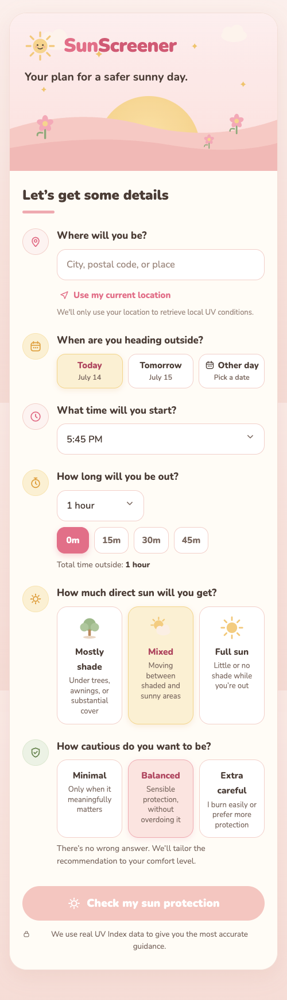
02
AI-Assisted House Decision Tool
Turning a Complicated Life Decision into Structured Scenarios
I built a custom decision engine to help my partner and I navigate a complex housing decision involving renovations, debt, commuting, quality of life, and future financial goals.
The tool modeled multiple scenarios—from renovating to selling—and incorporated highly personal factors that don’t fit neatly into a spreadsheet.
I enjoyed thinking through how to quantify things that aren’t naturally quantifiable, like quality of life and personal priorities. This tool was able to make something that previously felt overwhelming much more clear.
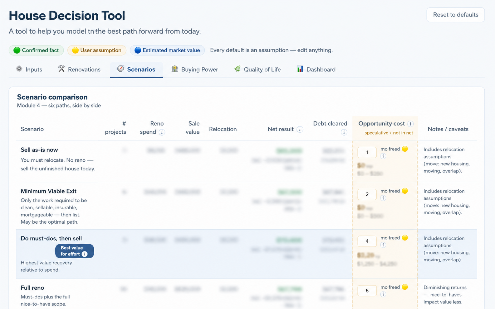
03
Carousel Creative Website
Rebuilding My Agency Website with AI-Assisted Development
I rebuilt my agency website from scratch using Claude Code, GitHub, and Vercel to better reflect our positioning and showcase our work.
I intentionally spent a lot of time on custom animations and interactions because I wanted the site to feel crafted and bespoke—not like a generic AI-generated website.
Visit the site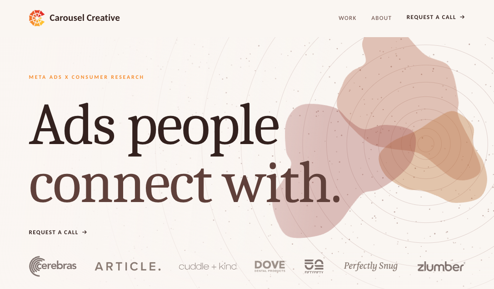
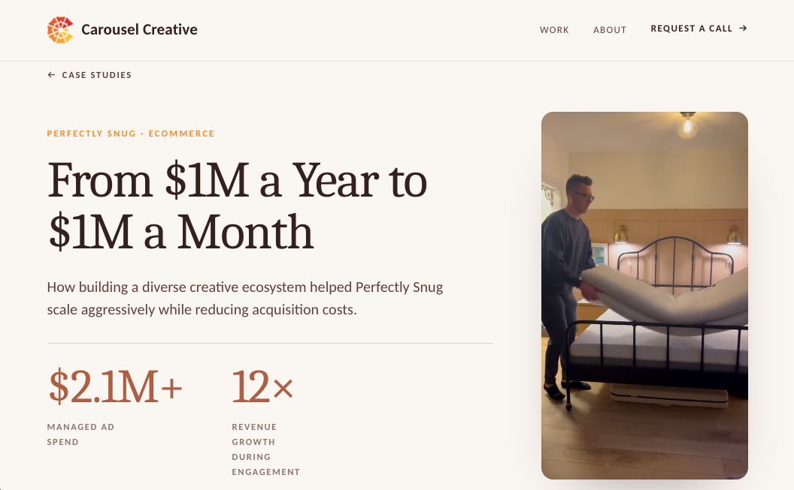
04
Lift Curious
A Community for Women New to Strength Training
I built Lift Curious because I wished something like it existed when I started lifting. The goal was to create a local community where women could connect, learn, find gym buddies, and feel less intimidated getting started.
I launched the platform publicly in Montreal and grew it to nearly 70 members through paid advertising and community outreach.
One of my favorite parts of this project has been seeing real people use something that started as a simple idea.
Results
- 69 members since launching in June 2026
- 86% profile completion rate
- Successfully launched and actively used by local members
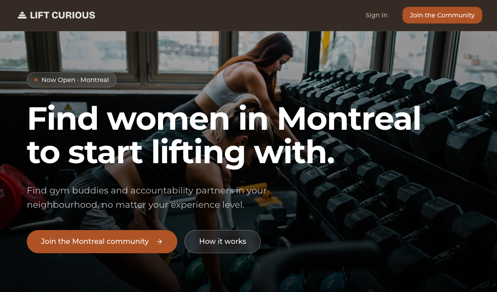
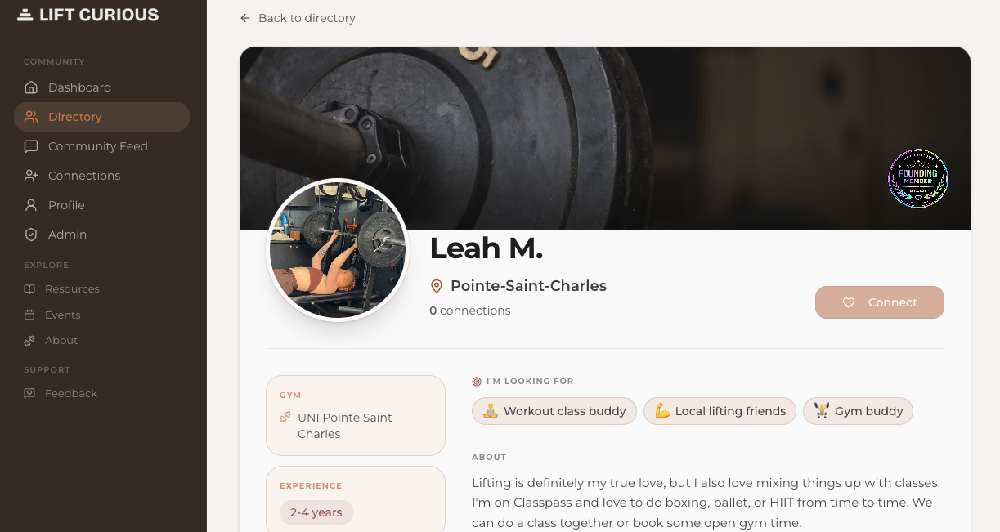
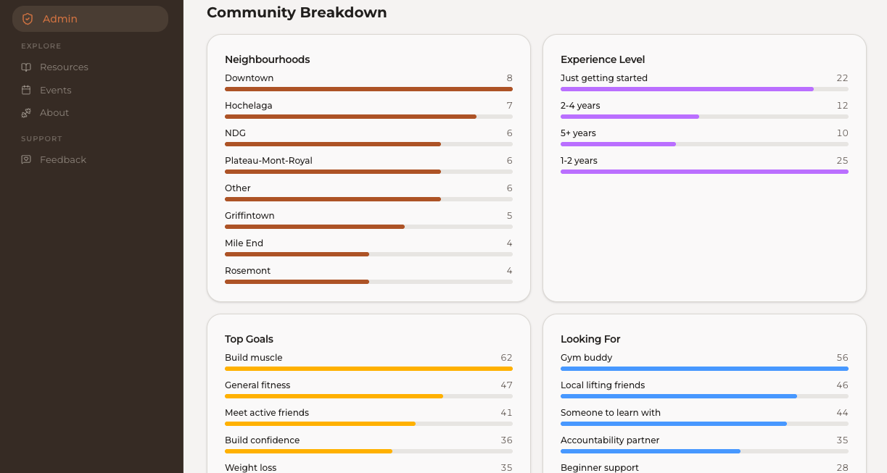
05
CETA
An AI-Powered Sprint Training Companion
I built CETA to solve a frustrating problem I had while doing sprint interval training. I was constantly switching between timers, heart rate apps, and ChatGPT to track recovery and get coaching recommendations.
The app combines interval timing, heart rate tracking, and AI-powered coaching into one experience.
This was the first project where I built something and then immediately took it to the gym and used it in a real workout. Running on the treadmill while using something I had built myself was an incredibly rewarding experience.
The current MVP is built in Replit, and I’m now rebuilding it as a native iPhone app to support Bluetooth heart rate monitor integration.
View the app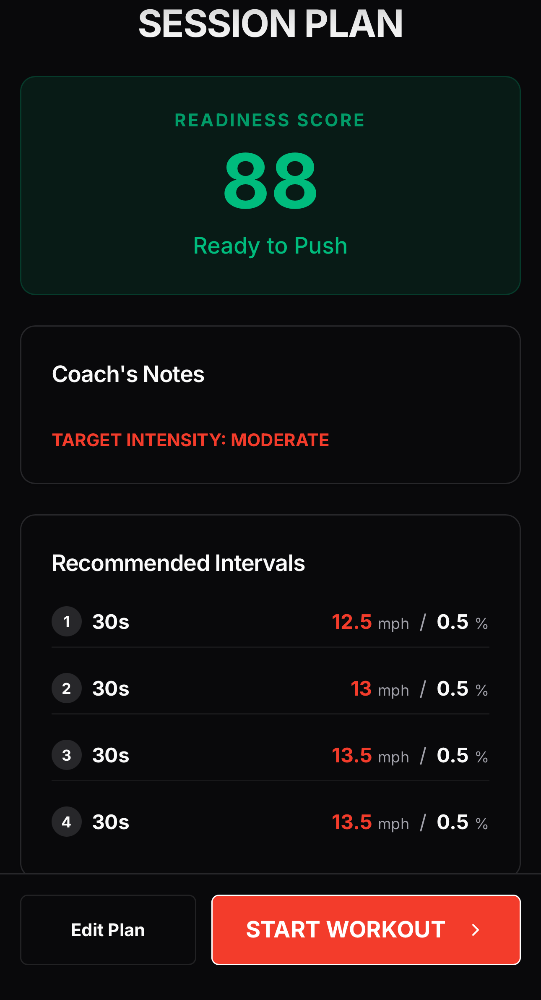
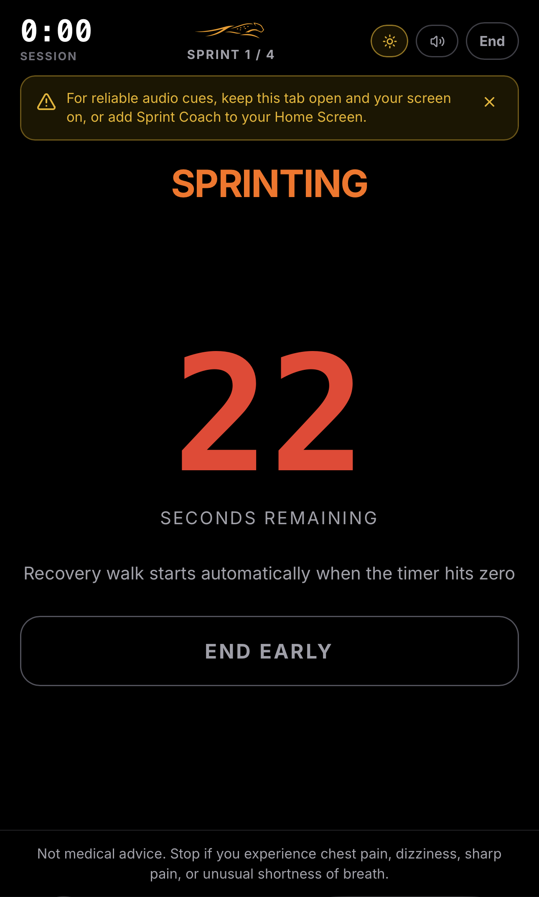
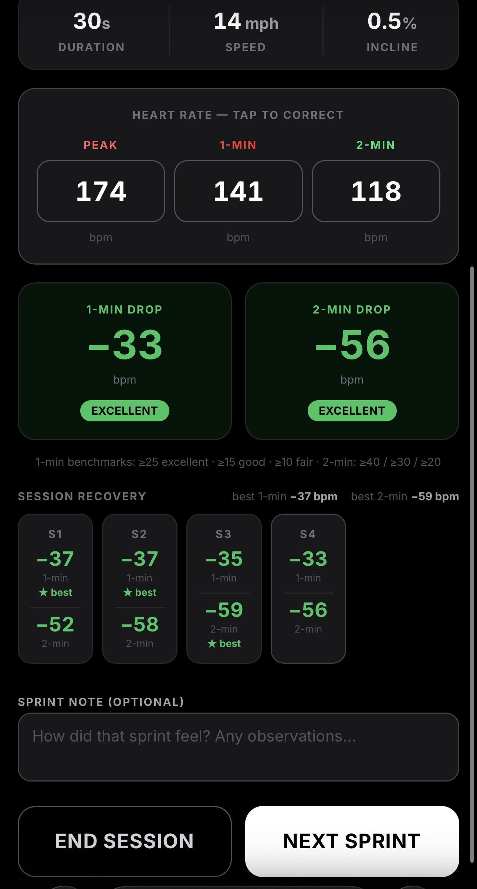
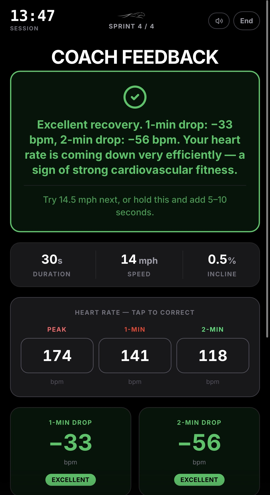
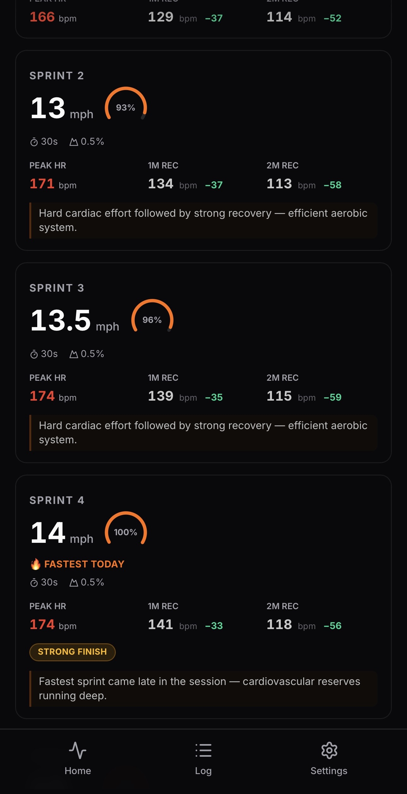
06
Personal Health Dashboard
6+ Years of My Life, Unified in One Place
I’ve been tracking my habits, workouts, mood, and health data for over six years across Fitbit, Apple Health, Polar, ClassPass, and Daylio.
I built this dashboard to bring everything together in one place and consolidate.
I especially loved the challenge of combining messy data from multiple sources and turning it into something clean, connected, and useful. I made plenty of beginner mistakes along the way, but it taught me a lot about data modeling and visualization.
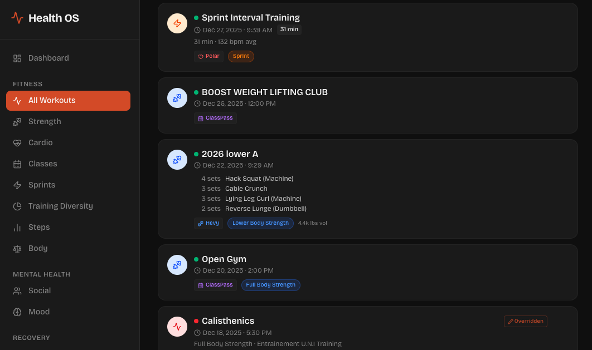
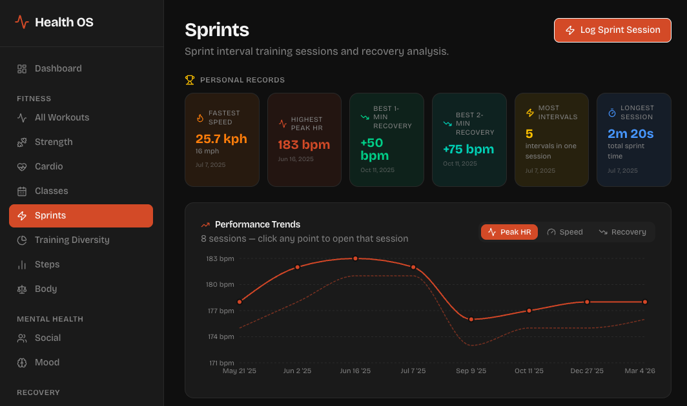
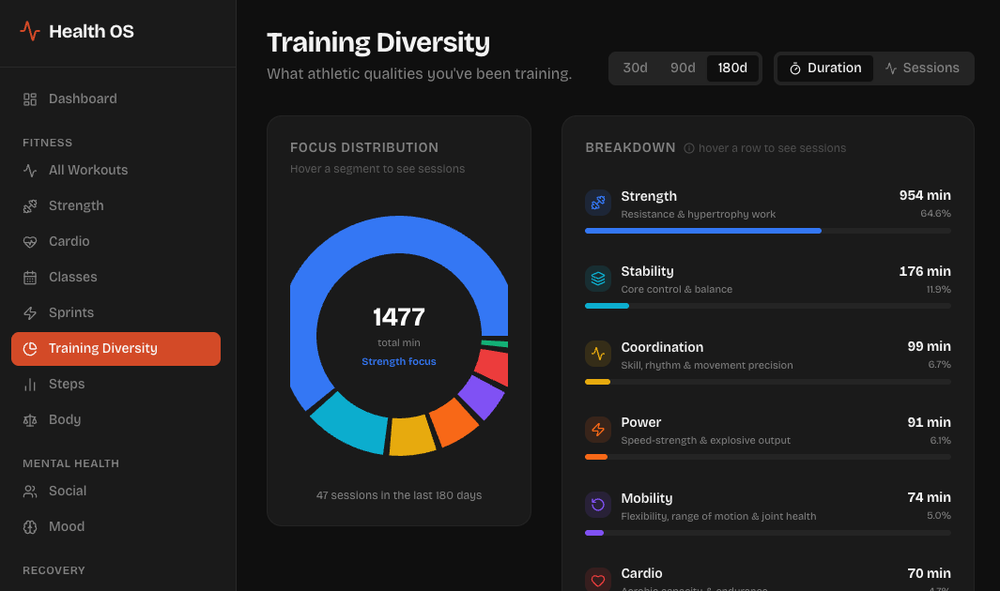